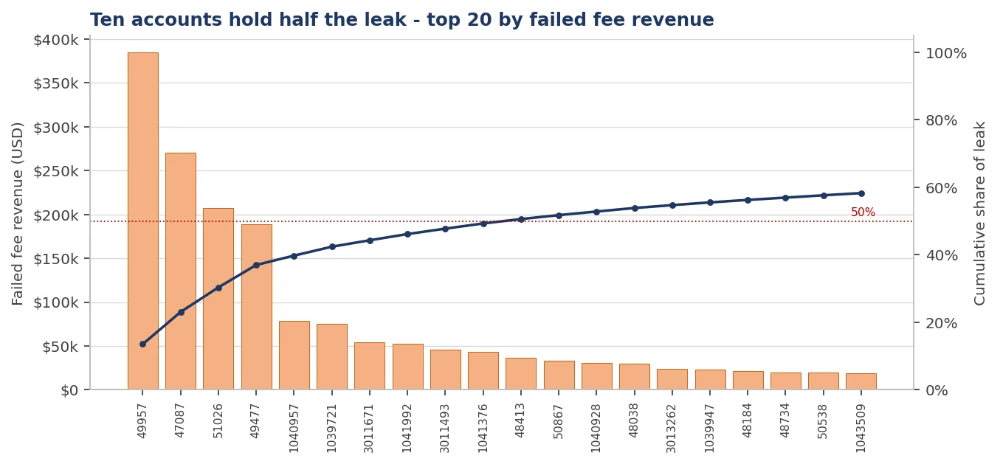
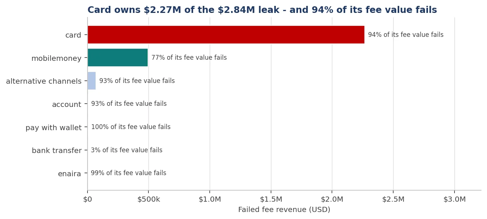
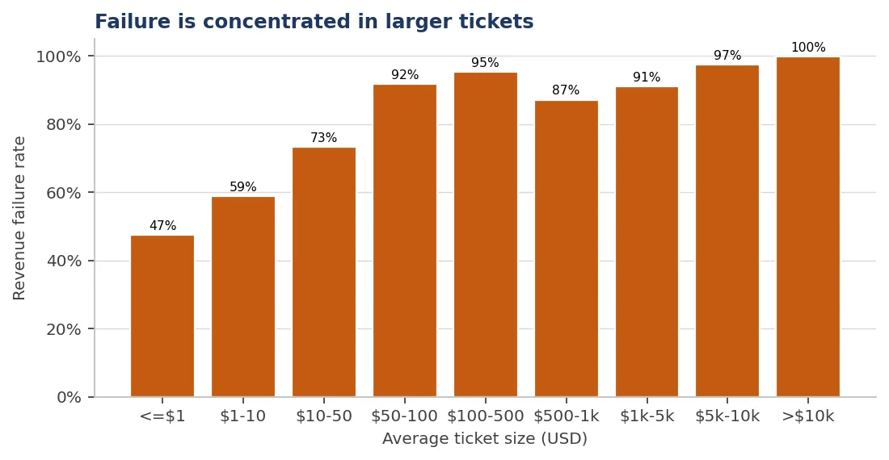
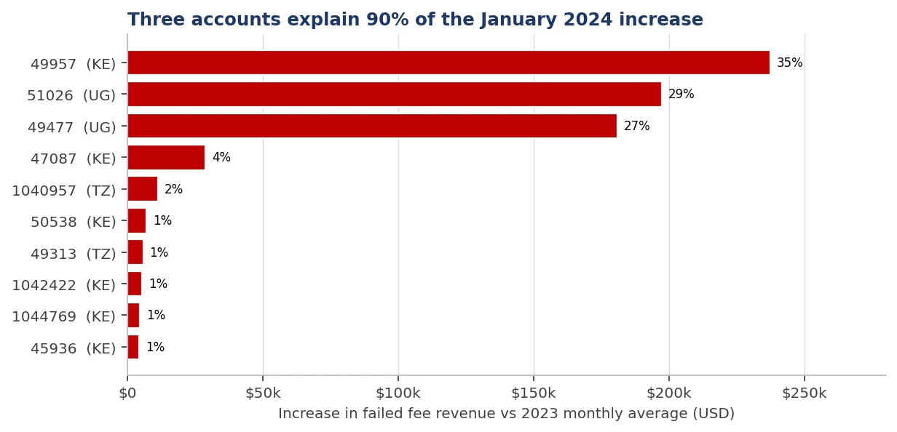

The question
This is a supplied challenge extract, not an audited production ledger. Failed fee revenue is a counterfactual: what the fee would have been if the transaction had succeeded. It is not a confirmed accounting loss.
The brief gave me three questions. Where do payment failures concentrate? What happened in January 2024, when the revenue failure rate reached 97 percent? What could a fix realistically recover?
I used 62,684 monthly aggregate rows from January 2022 to April 2024, covering Kenya, Uganda, Tanzania, Ghana and Zambia. The rows are customer by month by currency by payment type by status.
The short answer
The leak is concentrated, not diffuse. Ten accounts hold 49.3 percent of it. Card carries 79.7 percent of the failed fee revenue. January 2024 was a volume and mix shock from a few accounts, not a broad change in customer behaviour. A credible fix recovers about $0.32M to $0.40M over the 28 months, not the full $2.84M.
Numbers at a glance
What I found
Two failure rates tell two different stories
Is the failure rate 62 percent or 90 percent?
Both figures are correct, but they answer different questions. Count failure rate divides failed attempts by all attempts. Revenue failure rate divides failed fee revenue by all fee revenue.
62.0 percent of attempts failed. 90.3 percent of fee dollars failed. A failed attempt carries about 5.7 times the fee of a successful one, so the money skews heavily towards failures.
| Lens | Value | What it answers |
|---|---|---|
| Count failure rate | 62.0 percent | How often a payment fails |
| Revenue failure rate | 90.3 percent | Where the fee money sits |
| Average failed fee | 5.7 times a success | Why the two rates diverge |
| Lowest revenue month | 78.7 percent, Oct 2023 | The brief's never below 78 percent claim holds |
| Lowest count month | 50.4 percent, Jul 2022 | The same claim fails on the count lens |
What it means. The brief mixes both lenses. Reporting only one of them makes the problem look either too soft or too absolute.
Keep both rates on every dashboard, with the question each one answers written next to it.
A small set of accounts holds the leak
Is this a broad customer problem or a few broken flows?
The top 10 accounts by failed fee revenue hold $1,400,986, which is 49.3 percent of the leak. The top 3 hold 30.3 percent. The top 100 hold 78.4 percent.
957 accounts fail at least 99 percent of their fee value and carry 54.7 percent of the leak. Account 49957 alone runs 54,539 attempts with 100 percent card and USD exposure and a 100 percent revenue failure rate. That pattern looks like a broken integration or a routing rule, not customer behaviour.
What it means. Account-level triage reaches more money than a broad awareness campaign.
Start with the top three accounts, then work down the ranked account list.

Card is the single biggest lever
Which payment type carries the problem?
Card is 23 percent of attempts but 77 percent of fee revenue. 93.8 percent of card fee value fails, and card holds 79.7 percent of the total leak, or $2,266,220.
Bank transfer tells a useful contrast. Only 3.3 percent of its fee value fails. Failure is technically avoidable in this dataset, but bank transfer carries almost no volume, so it cannot simply replace card.
What it means. Any serious fix has to address card acceptance, scheme routing or account configuration.
Treat card as the priority channel, with bank transfer as a benchmark rather than a scale solution.

Larger tickets fail more often
Do small or large payments carry the leak?
Sub-1 dollar payments fail 47 percent by fee value. The 100 to 500 dollar band fails 95.4 percent and carries $1.22M of the leak. Every band above 50 dollars fails above 85 percent by fee value.
What it means. The failure is not spread evenly across ticket sizes. High-value flows are the expensive ones.
Prioritise high-ticket account and channel combinations in any remediation wave.

January 2024 was a mix shock, not a rate shock
Why did the rate jump to 97.3 percent?
January 2024 recorded $683k more failed fee revenue than the 2023 monthly average. Ten accounts explain 99.9 percent of that increase. Three of them pushed card from 25 percent to 57 percent of attempts and USD from 15 percent to 53 percent.
The same mechanism appears again in April 2024 through account 47087 on mobilemoney. So the January spike is a visible peak in a recurring onboarding and routing problem, not a one-off event.
What it means. A monthly rate alone would have flagged the spike but not shown which accounts caused it.
Add account-level failed revenue monitoring so the next spike is visible before it becomes a headline.

The recoverable prize is much smaller than the headline
Can the whole $2.84M be recovered?
No. I built recovery scenarios as current failure rate minus an assumed target rate, multiplied by the revenue in scope. The stacked case fixes the top three accounts to the portfolio's own mobilemoney floor of 77.3 percent, then lifts the rest of card to 85 percent. That gives $319,853, or 11.3 percent of the leak.
The stretch case lifts all card to the same 77.3 percent floor and gives $399,575, or 14.1 percent. A best-in-class case that assumes card can match bank transfer would imply $2.28M, but that assumption is not credible at this volume.
What it means. The honest answer is a range, with targets clearly labelled as assumptions.
Commit to the stacked case, and treat the stretch case as upside rather than a forecast.

What I would do first
Fix the top three accounts
High priority- Evidence
- The top three hold 30.3 percent of the leak. Account 49957 alone runs 54,539 attempts at 100 percent card and USD failure.
- What to do
- Audit integration, scheme support and routing rules for those accounts. Lift them to the observed mobilemoney floor of 77.3 percent first.
- What I expect
- About $196k of recovery in the stacked scenario.
Lift the rest of card to 85 percent
High priority- Evidence
- Card fails 93.8 percent by fee value and holds 79.7 percent of the leak. Bank transfer fails only 3.3 percent.
- What to do
- Review card acceptance and routing for the remaining card accounts. Use 85 percent as a staged target, not a guaranteed outcome.
- What I expect
- About $124k on top of Wave 1.
Alert on account-level failed revenue
High priority- Evidence
- The January 2024 spike was already visible in December 2023, but the monthly blended rate hid the cause.
- What to do
- Track failed fee revenue by account weekly and alert when one account contributes a large month-on-month jump.
- What I expect
- Catches the next concentration before it becomes a 97 percent month.
Report both failure lenses
Medium priority- Evidence
- 62.0 percent of attempts fail, but 90.3 percent of fee dollars fail. The brief mixes them.
- What to do
- Put count and revenue failure rates side by side, with the formula and question each answers.
- What I expect
- Stops stakeholders arguing about two correct numbers.
Triage the near-100 percent accounts as broken flows
Medium priority- Evidence
- 957 accounts fail at least 99 percent of fee value and hold 54.7 percent of the leak.
- What to do
- Treat these as integration or configuration cases first, and churn cases second.
- What I expect
- Focuses support effort where failure is persistent rather than occasional.
What this cannot tell you
The extract has no failure reason, provider, retry flag or transaction timestamp. I cannot observe technical failure directly. The technical versus behavioural split in the workbook is an account-level persistence proxy and is labelled as inference.
Rows are monthly aggregates. Day-of-month questions in the brief cannot be answered at this grain.
The source does not say whether a failed fee was ever booked, reversed or refunded. Failed fee revenue is a counterfactual.
42 percent of sector values are blank. Sector cuts are directional only.
The recovery targets are assumptions. They are not forecasts and should be confirmed with payment Operations before they become commitments.
This is a supplied challenge extract, not an audited production ledger.